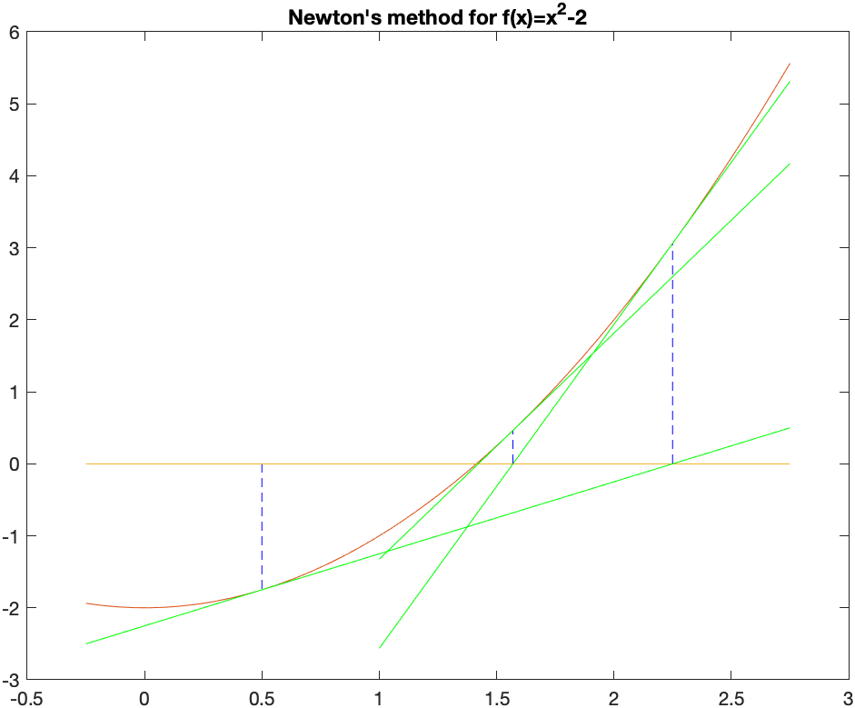

Previous Chapter | Return to all notes | Next chapter
Before continuing with this chapter, we look at a way to find the zeros (or roots) of a function. Although Matlab (and most CASs) have this built-in, we examine the details here.
Consider the function \(f(x)=x^{2}-2\), which is plotted below:
It has two roots \(x=\sqrt{2}\) and \(x=-\sqrt{2}\). We will use this example to find a numerical approximation of this.
If we evaluate the function at \(x=0\) and \(x=2\), note that \(f(0)=-2\) and \(f(2)=2\). The fact that these values have opposite signs is important. Recall the intermediate Value Theorem:
Intermediate Value Theorem If a function \(f\) is continuous on an interval \([a,b]\), then \(f\) takes on all values (\(y\)-values or heights) between \(f(a)\) and \(f(b)\). Specifically if \(d\) is between \(f(a)\) and \(f(b)\), then there exists at least one value \(c\) such that \(f( c )=d\).
See this page for more information.
In the example of \(f(x)=x^2-2\) on \([0,2]\), \(f\) is continuous, so \(f\) takes on all values between \(f(0)=-2\) and \(f(2)=2\), including 0. That is, there is a number \(c\) such that \(f( c )=0\). The value of \(c\) is the root we seek.
The bisection method exploits the Intermediate Value Theorem to make sure that we always have a interval that contains a root. First, we will walk through the bisection method for the example and then write it down in general.
Let \(\tilde{a}\) be the midpoint between \(a\) and \(b\) or \(x=0\) and \(x=2\) in our case. That is \[\tilde{a} = \frac{a+b}{2} = \frac{0+2}{2}=1\] There are three choices for \(f(\tilde{a})\). Either it is 0, then you have found the root or it is less than zero or greater than zero.
In this example, \(f(1)=-1\), then it is less than zero. Because our left endpoint was less than zero, we replace the interval \([0,2]\) with \([1,2]\). The new interval \([1,2]\) satisfies the condition that the function values are opposite signs.
And then we repeat. The midpoint of this interval is 1.5 and \(f(1.5)=1.5^{2}-2=0.25\) and since this is positive, we replace the 2 with 1.5 and our new interval is \([1,1.5]\).
Find the next 3 intervals using this technique. Recall that you always need to have the function value of one side be less than and the other be greater than 0.
###Stop this crazy thing!!!
Since you are wise, you notice that you can continue this process forever and you just don’t have that much time. For example, on the tenth iteration, you should have the interval
[1.41406250,1.416015625]and as long as the condition that the function values of two endpoints are opposite signs, then there is a guarantee of a root inside this interval.
Again, we can go on forever, but a good place to stop (often called a halting condition) is when the length of the interval shrinks to a particular size. Let’s say that we stop when the length is \(10^{-4}\) and then we should return our best guess at the root, which may be the midpoint of the final interval. If we stop when the interval is less than \(10^{-4}\) and take this midpoint, the answer will be 1.414215088.
This section will slowly build up a procedure that does this. The goal of this section is to learn how to take an algorithm (explained above) and make a function that does this. Make a new Script (not a live script)
Let’s start with a template. We want to take a function and an interval (that is two numbers) in and return an approximate root.
function result = bisect(f,a,b)
endThis will just do that.
Save the script as bisect.m in the directory where you have added other scripts for this class. Earlier we put them in a directory called ext_functions. This isn’t required, but if the name is different, make sure you adapt. Then try to run the function:
addpath("ext_functions/")
bisect(@(x) x^2-2,0,2)and if all goes well, there won’t be errors. If you get errors, double check that the function name is correct and the directory is correct.
Add in some checking on the arguments. Matlab has some nice ways to make sure that the inputs are correct. Here’s how to do that:
function result = bisect(f,a,b,options)
arguments
f function_handle
a (1,1) {mustBeReal}
b (1,1) {mustBeReal}
end
endwhere all of the arugments are listed in the arguments block and
f is checked to make sure it is a function handlea and b are numbers (or in Matlab-speak 1 by 1 matrices) the mustBeReal in the braces ensure you are not putting in things like complex numbers.Let’s check to make sure this is okay.
If we result the function:
bisect(@(x) x^2-2,0,2)you shouldn’t see any errors. However,
syms x
bisect(x^2-2,0,2)returns an error that is like:
Error using bisect
Invalid argument at position 1. Value must be of type function_handle or be convertible to function_handle.Define the midpoint and return it.
Next, let’s do something super simple and define the midpoint and then return it. Add the lines:
c = 0.5*(a+b); % calculate the midpoint of [a,b]
result = c;after the end that ends the arguments block of code (or between the two ends).
Try running this block of code. Make sure there are no errors.
bisect(@(x) x^2-2,0,2)and you should get the answer 1. Note: if you don’t see any output, double-check that you included the result=c line. To get a function to return a value, you must assign output variable (on the top line of the function) to a value.
Create a new interval
Now, let’s assign the result variable to an interval instead. Recall that you want to make sure that the endpoints of the new interval are opposite signs. The easiest way to check this is to determine if the product of the function values is negative and we’ll make and if block like:
function result = bisect(f,a,b) %options)
arguments
f function_handle
a (1,1) {mustBeReal}
b (1,1) {mustBeReal}
end
c = 0.5*(a+b); % calculate the midpoint of [a,b]
if (f(c)*f(a)<0)
result = [a c]; %bisect(f,a,c,'eps',options.eps);
else
result = [c b];%bisect(f,c,b,'eps',options.eps);
end
endIf we test this with bisect(@(x) x^2-2,0..2) we get
[1 2]which means that the root is in the interval [1,2].
Use recursion to do a number of steps We will call the bisect function inside if block instead. Consider
function result = bisect(f,a,b) %options)
arguments
f function_handle
a (1,1) {mustBeReal}
b (1,1) {mustBeReal}
end
c = 0.5*(a+b); % calculate the midpoint of [a,b]
if (f(c)*f(a)<0)
result = bisect(f,a,c);
else
result = bisect(f,c,b);
end
endand notice that in the if block we call bisect again (this makes it resursive) on the interval either \([a,c]\) or \([c,b]\). Don’t run this yet
If you do, you’ll get an error (about a limit of the number of recursive calls, which isn’t the end of the work). This is because remember that with a recursive function you always need a way to stop the recursion. What we’ll do is if the interval is small enough, we’ll stop and return the root.
function result = bisect(f,a,b) %options)
arguments
f function_handle
a (1,1) {mustBeReal}
b (1,1) {mustBeReal}
end
c = 0.5*(a+b); % calculate the midpoint of [a,b]
if (b-a)<0.0001
result = c;
elseif (f(c)*f(a)<0)
result = bisect(f,a,c);
else
result = bisect(f,c,b);
end
endLet’s give this one a go: bisect(@(x) x^2-2,0..2) and the answer is returned 1.4142
Allow more robust cutoff values
In the example above, the bisection method stops when the interval length reaches 0.0001, but what if we want it more precise. We can add an optional argument in the following way:
function result = bisect(f,a,b, options)
arguments
f function_handle
a (1,1) {mustBeReal}
b (1,1) {mustBeReal}
options.eps (1,1) {mustBePositive} = 1e-4
end
c = 0.5*(a+b); % calculate the midpoint of [a,b]
options.eps
if b-a< options.eps
result = c;
elseif (f(c)*f(a)<0)
result = bisect(f,a,c,'eps',options.eps);
else
result = bisect(f,c,b,'eps',options.eps);
end
endand notice that it is important that we send the options to the function recursively in the if block.
If we run the function again, it will be exactly the same, but we will see below that we optionally throw in a way to get more accurate numbers.
First, if we change the output format to
format longand rerun the same command above, we’ll get 1.414215087890625. How accurate is this?
In this case, we know the exact answer is \(\sqrt{2}\), so we can do
x0 = bisect(f,0,2)
abs(x0-sqrt(2))which returns 1.525517529854525e-06, meaning that it is about 6 digits accurate.
If we run:
x0 = bisect(@(x) x^2-2,0,2,'eps',1e-10)
abs(x0-sqrt(2))we get 1.795119608516416e-11, which is nearly 11 digits of accuracy.
Find the solution to \(\cos x = x\) using the bisection method. Hint: use algebra to get all terms to one side. You may need to plot the function to get an idea where the solution is.
Earlier, we have seen a few cases of iteration, in particular recursive iteration. For example, the sequence: \[a_{n} = \frac{1}{a_{n-1}+1}\] with \(a_1=1\) generates a sequence. In Chapter 10 we found the first few terms and then found the limit of this. Recall that if we define:
a=zeros(10,1,'sym');
a(1) = sym(1);
for i=2:10
a(i) = 1/(a(i-1)+1);
end
agenerates the first 10 terms or \[1,\frac{1}{2},\frac{2}{3},\frac{3}{5},\frac{5}{8},{\frac {8}{13}},{\frac {13}{21}},{\frac {21}{34}},{\frac {34}{55}},{\frac {55}{89}},{\frac {89}{144}}\]
and as we discovered above, this sequence converges to the golden mean (or golden ratio) \[\frac{1+\sqrt{5}}{2}\]
Another useful iterative sequence is the following: \[x_{n+1} = \frac{x_n^{2}+a}{2x_n}\qquad x_0=a\]
for a positive number \(a\). We will show that this converges to \(\sqrt{a}\). For example, if \(a=2\), then
xval = zeros(10,1,"sym") % make a zero
xval(1)=1
for i=2:10
xval(i) = (xval(i-1)^2+2)/(2*xval(i-1))
end
xvalThe first few terms of this we get: \[1,\frac{3}{2},\frac{17}{12},\frac{577}{408},\frac{665857}{470832},\frac{886731088897}{627013566048},\ldots\]
and then the fraction gets quite large because we declared a symbolic array, so everything is rational. If instead, we use numeric array, like:
format long
xval = zeros(6,1); % make a zero
xval(1)=2;
for i=2:length(xval)
xval(i) = (xval(i-1)^2+2)/(2*xval(i-1));
end
xvalthe result is
\[2.0,1.500000000,1.416666666,1.414215686,1.414213562, \ldots\]
Use the above to find \(\sqrt{5}\).
The above formula is a specific case of Newton’s method for finding roots. Here’s a geometric view of Newton’s method.
We intend to find the point \(x^{\star}\) such that \(f(x)=0\). We don’t know how to find \(x^{\star}\), but have an approximate solution, call it \(x_0\). Draw the tangent line to the curve \(y=f(x)\) at \(x_0\). The following plot is an example with \(f(x)=x^{2}-2\) and \(x_0=0.5\):

The point on the left is \(x_0=0.5\) and the green line is the tangent line there. Instead of using the function, we use the tangent line, which is easy to solve. That value is \(x_1=2.25\). At this point (no pun intended), we find the tangent line at \(x_1\) and find where it crosses the \(x\)-axis.
The tangent here is \(y=\frac{9}{2} (x-2.25)+(2.25)^2\) and then it is added to the above plot to get: 
Then the tangent above is solved for \(x\) to get \(x_2 = \frac{113}{72}\). We’ll show one more step to include the tangent line at this point: 
and visually it looks like it is very close to the root. It’s not exact and we can keep iterating until we get as close as we’d like.
Recall that the tangent line to the curve \(y=f(x)\) at \(x=a\) is \[y=f'(a)(x-a)+f(a)\] and if we set \(y=0\) in the tangent line because we are seeking the root (where the function is 0) \[0=f'(a)(x-a)+f(a)\] and then we solve for \(x\). (Either by hand or let Matlab do it). \[x=a+\frac{f(a)}{f'(a)}\]
Next, if we let \(a=x_0\), our initial point and \(x\) be \(x_1\), the next point: \[x_1=x_0+\frac{f(x_0)}{f'(x_0)}\]
or in general: \[x_{n+1}=x_n+\frac{f(x_n)}{f'(x_n)}\]
and this last equation is called Newton’s rootfinding method (or just Newton’s method)
###Example
Use Newton’s method to find the solution to \(\cos x = x\).
If we let \(f(x)=x-\cos x\) and perform Newton’s method. Since, \(f'(x)=1+\sin x\), this means that \[x_{n+1} = x_n - \frac{x_n-\cos x_n}{1+\sin x_n}\] and let’s use \(x_0=0\) as an initial guess.
If we enter:
xval = zeros(6,1); % make an array of zeros
xval(1)=0;
for i=2:length(xval)
xval(i) = xval(i-1) -(xval(i-1)-cos(xval(i-1)))/(1+sin(xval(i-1)));
end
xvalthe results are \[0., 1.000000000, 0.7503638679, 0.7391128909, 0.7390851334, 0.7390851332\]
As you can see from the sequence, the last two numbers are the same for the first 9 digits.
And looking at a plot of \(x\) and \(\cos x\),

The solution looks like about 0.73.
There are two \(x\) values such that \(1-x^{2}=\sin x\). Find the solution that satisfies \(x\lt 0\). Plot the two function to see if your answer is reasonable.
The following function:
function result = newton(f,df,x0,options)
arguments
f function_handle
df function_handle
x0 (1,1) {mustBeReal}
options.eps (1,1) {mustBePositive} = 1e-6
end
x1=x0;
dx=1; % this will be a step, just initialized to 1 to get the while loop started
while(abs(dx)>options.eps)
dx=f(x1)/df(x1);
x1 = x1-dx;
end
result = x1;
endcan be used to solve Newton’s method for a given function \(f\), its derivative \(df\) and an initial point \(x0\).
We can now use this function to find roots. Here’s the solution to \(x^2-2=0\):
syms x
f(x) = x^2-2;
df(x) = diff(f(x),x)
root = newton(@(x) f(x),@(x) df(x),1)
double(root)Although it seems like the bisection function above was fantastic, there’s a few other things to make it more robust in that it can handle any situations.
Ensuring that the intial interval has a root
To use the bisection method, there needs to be a root. Recall above, we invoked the intermediate value theorem to do this. A condition was that the function values at \(a\) and \(b\) had different signs. The following will check this. Put this just after the arguments block of code.
if f(a)*f(b)>0
error("A root is not guaranteed on the given interval.")
endAn example where this won’t work is the function \(f(x)=x^2+2\). It has not real root because it is always positive.
Calling the function with bisect(@(x) x^2+2,0,2) results in the error above.
Adding some help
It’s often helpful to add a description to the function, so here’s the latest
function result = bisect(f,a,b, options)
% BISECT Finds the root of the function on the interval [a,b] using the
% bisection method.
% root = bisect(f,a,b)
%
% Example: bisect(@(x) x^2-2,0,2) finds the root of x^2-2 on the interval
% [0,2] which returns an approximation to the square root of 2.
%
% Optional Arguments:
% eps: a positive real number. This is the stopping condition. Defaults
% to 1e-4
arguments
f function_handle
a (1,1) {mustBeReal}
b (1,1) {mustBeReal}
options.eps (1,1) {mustBePositive} = 1e-4
end
c = 0.5*(a+b); % calculate the midpoint of [a,b]
if b-a< options.eps
result = c;
elseif (f(c)*f(a)<0)
result = bisect(f,a,c,'eps',options.eps);
else
result = bisect(f,c,b,'eps',options.eps);
end
endWhere all of the help is written in comments at the top of the funciton. If you type: help bisect you will see the help text shown.
Finding roots of functions or solutions of equations can be done with solve or vpasolve. First, consider solving \(\cos(x) = x\) that we saw above. If we use the solve command with
solve(cos(x)==x)Then first Matlab returns a warning:
Warning: Unable to solve symbolically. Returning a numeric solution using vpasolve.and then retuns:
0.73908513321516064165531208767387which appears to give about 30 decimals places.
And recall that for example with polynomials, Matlab often gives an unhelpful result:
solve(x^5-100*x+1)returns an array of root(z^5-100z+1,z,1) whereas
vpasolve(x^5-100*x+1)returns \[ \left(\begin{array}{c} -3.1647727346753370902009096534805\\ 0.01000000000100000000050000000035\\ 3.1597727034248370797270268345331\\ -0.0024999843752499947633085905264823-3.1622826011677773505491959715959\,\mathrm{i}\\ -0.0024999843752499947633085905264823+3.1622826011677773505491959715959\,\mathrm{i} \end{array}\right) \] where the last two are complex solution.